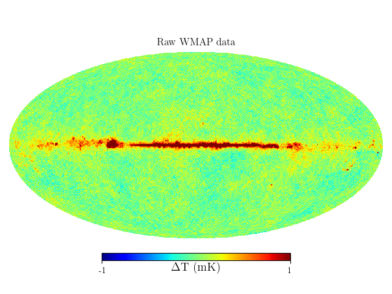

WMAP plotting with HEALPix¶
This example uses the astromL.datasets.fetch_wmap_temperatures() functionality to download and plot the raw WMAP 7-year data. The visualization requires the healpy package to be installed.
Downloading http://lambda.gsfc.nasa.gov/data/map/dr4/skymaps/7yr/raw/wmap_band_imap_r9_7yr_W_v4.fits
[= ] 614.6kb / 24.01Mb
[== ] 1.20Mb / 24.01Mb
[=== ] 1.80Mb / 24.01Mb
[==== ] 2.40Mb / 24.01Mb
[===== ] 3.00Mb / 24.01Mb
[====== ] 3.60Mb / 24.01Mb
[======= ] 4.20Mb / 24.01Mb
[======== ] 4.80Mb / 24.01Mb
[========= ] 5.40Mb / 24.01Mb
[========== ] 6.00Mb / 24.01Mb
[=========== ] 6.60Mb / 24.01Mb
[============ ] 7.20Mb / 24.01Mb
[============= ] 7.80Mb / 24.01Mb
[============== ] 8.40Mb / 24.01Mb
[=============== ] 9.00Mb / 24.01Mb
[================ ] 9.60Mb / 24.01Mb
[================= ] 10.20Mb / 24.01Mb
[================== ] 10.80Mb / 24.01Mb
[=================== ] 11.40Mb / 24.01Mb
[==================== ] 12.00Mb / 24.01Mb
[===================== ] 12.60Mb / 24.01Mb
[====================== ] 13.20Mb / 24.01Mb
[======================= ] 13.80Mb / 24.01Mb
[======================== ] 14.40Mb / 24.01Mb
[========================= ] 15.00Mb / 24.01Mb
[========================== ] 15.61Mb / 24.01Mb
[=========================== ] 16.21Mb / 24.01Mb
[============================ ] 16.81Mb / 24.01Mb
[============================= ] 17.41Mb / 24.01Mb
[============================== ] 18.01Mb / 24.01Mb
[=============================== ] 18.61Mb / 24.01Mb
[================================ ] 19.21Mb / 24.01Mb
[================================= ] 19.81Mb / 24.01Mb
[================================== ] 20.41Mb / 24.01Mb
[=================================== ] 21.01Mb / 24.01Mb
[==================================== ] 21.61Mb / 24.01Mb
[===================================== ] 22.21Mb / 24.01Mb
[====================================== ] 22.81Mb / 24.01Mb
[=======================================] 23.41Mb / 24.01Mb
[========================================] 24.01Mb / 24.01Mb
# Author: Jake VanderPlas <vanderplas@astro.washington.edu>
# License: BSD
# The figure is an example from astroML: see http://astroML.github.com
import numpy as np
from matplotlib import pyplot as plt
# warning: due to a bug in healpy, importing it before pylab can cause
# a segmentation fault in some circumstances.
import healpy as hp
from astroML.datasets import fetch_wmap_temperatures
#------------------------------------------------------------
# Fetch the wmap data
wmap_unmasked = fetch_wmap_temperatures(masked=False)
#------------------------------------------------------------
# plot the unmasked map
fig = plt.figure(1)
hp.mollview(wmap_unmasked, min=-1, max=1, title='Raw WMAP data',
fig=1, cmap=plt.cm.jet, unit=r'$\Delta$T (mK)')
plt.show()